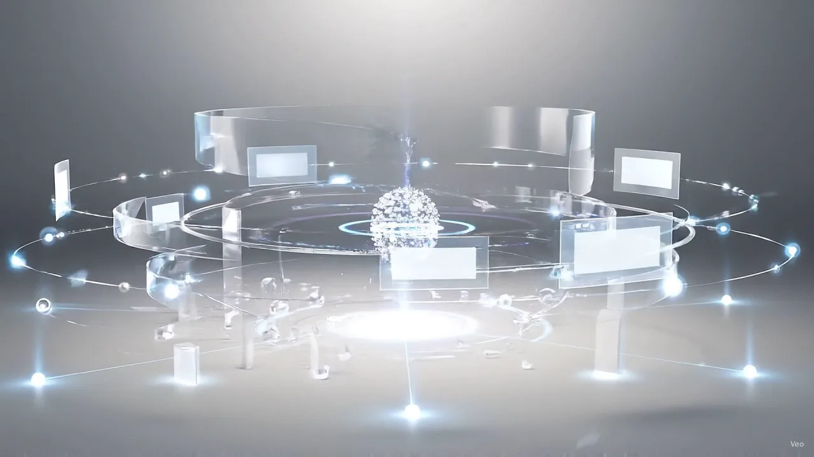

CRM com IA para atendimento e vendas
Tudo sincronizado.
Resultados conectados.
Centralize conversas, leads e vendas em um CRM com IA que organiza atendimentos, qualifica oportunidades e conecta sua equipe ao cliente certo, no momento certo.
- Atendimento omnichannel
- IA qualificando leads
- Pipeline inteligente
- Transferência para humano